ZX Spectrum
My computer story began with ZX Spectrum-compatible machines, and I still remember them fondly. Original ZX Spectrum was a British home computer created in 1982, and its numerous clones and variations were immensely popular in Russia of early 90s. At that time it was an incomparably cheaper alternative to PC, still providing a lot of fun for game and programming activities. Spectrum keeps its fandom even today, with dozens of titles released yearly.
Looking back from 2020, I see ZX Spectrum as a platform for a great number of creative experiments in programming. It’s hard to evaluate the diversity of games and utilities, created for this computer. Spectrum was cheap and thus opened the doors to software development to numerous amateurs. It was open in the sense that no licensing or "approval" was needed to create and sell Spectrum software (in contrast to game consoles of 80s and 90s). Unfortunately, the inexorable Sturgeon’s law holds for Spectrum, some real gems can be found nevertheless. The Spectrum catalog isn’t as diverse as today’s Steam: technical limitations forced most authors to stick to few game genres, and many modern genres simply did not exist back then!
Naturally, many successful Spectrum games were just conversions from arcade machines or well-crafted shooters, beat 'em ups and other action games that "pushed technological limits", "featured great graphics and sound", and so on. Nowadays we can hardly appreciate "pushing the limits" of 80s home computing technology, which means turning our attention to more creative aspects of Spectrum games. Here I want to share some of my favorites, without creating a yet another top-games list with great but ubiquitous Exolon, R-Type, and Deathchase. Instead, I want to recall the games that remain fresh even nowadays.
Playing Spectrum is easy now. Just grab any reasonably fresh emulator and run it, or use an online emulator, and open a game archive file. The most often-used controls are keyboard (Q, A, O, P, M/Space or Z, X, O, K, Space), Kempston joystick (can be mapped to a physical joystick or a gamepad), and Interface I/II (1, 2, 3, 4, 5 or 6, 7, 8, 9, 0 keys).
Spectrum has very severe limitations on the use of color graphics, so most games feature a rather poor palette and blocky artwork. Fortunately, now we have great Nirvana engine (developed in 2013 and updated in 2015!) that removes some of these limitations via certain technical tricks, so the game is not over yet.
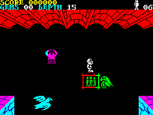 |
A unique arcade maze game, where the only way to die is to fall down from a great height. Still, the game is incredibly challenging and features hundreds of screens. |
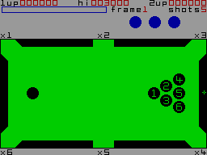 |
The simplest pool game ever, and a great pastime for a nice company even today. No learning curve here, no special tricks, just run and enjoy. |
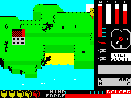 |
One of my most beloved games. You simply have to pick up people and cargo, scattered among a bunch of islands, with a helicopter. A very calm and relaxing game; the only thing I dislike is the timer that forces to play faster. |
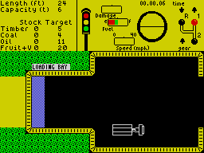 |
Another peaceful game (without any nasty timers!) Here you simply have to deliver cargo from various dealers to the company warehouse. However, driving a large truck through narrow streets is a challenging task: it is very easy to damage it too much and get a game over message. |
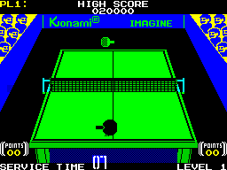 |
This is not an original ZX Spectrum game, it is a conversion from an arcade machine. Still, do you know many table tennis games around? This one is still great. |
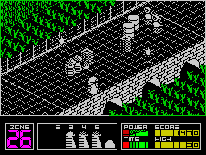 |
This game can be called "a shooter", but with a unique feature: you have to clean the path through a highway from debris and obstacles, so that the "ultimate weapon" can be pushed all the way to the end, where it has to destroy the alien base. Also, you have to take care of yourself and your robotic friends who push the sandbox-looking weapon through the screens. |
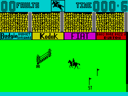 |
Just a show jumping simulator. Quite relaxing for my taste. Do you know many such games around? |
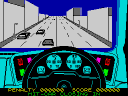 |
This is a unique "free-roaming" driving game for ZX Spectrum. A sort of 80s Grand Theft Auto. Yep, there is an aim: you have to chase and neutralize several "gang cars", but they also freely roam the city, so every time the game process is different. |
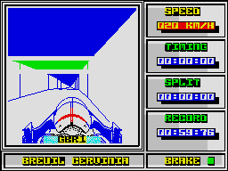 |
A bobsleigh simulator. Once again, are there many competitors in this genre?.. Bobsleigh is both an arcade game and management simulator, where you have to plan the budgets and the upcoming races very carefully. |
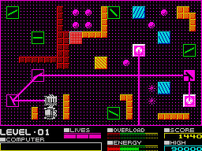 |
A unique puzzle/arcade game, where your objective is to direct the laser beam into the receiver using numerous rotating mirrors. Also you have to "eat" all the balls on the level, which is a very challenging task, given that the time is limited. Deflektor inspired some remakes, and similar game mechanics is used in several newer games. |
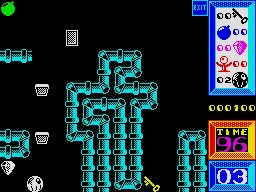 |
Spartan Spectrum graphics inspired a vast amount of games involving moving blocks, balls, lines, and other simple shapes. I, Ball 2 is a great example of such a genuinely 80s-style arcade game: simple, challenging, and addictive. |
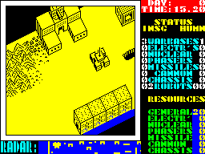 |
Nether Earth is not just one of the world’s first real-time strategy games, it is a game of hard decisions, where you have to think twice before producing any units, since most of them will have to work independently without your supervision. The gameplay of Nether Earth is recreated in planetary battles of Space Rangers and some remakes. |
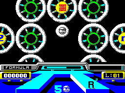 |
Honestly speaking, I am not a fan of this game, but the idea of walking through the set of rotating wheels to collect the necessary items deserves a special mention. |
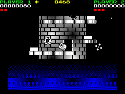 |
Another unique action game, where you have to climb a tower, avoiding numerous enemies. Very challenging and fun. This game was released for a variety of platforms, so it is not "Spectrum only". |
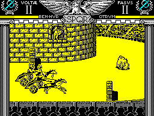 |
A bit awkward chariot racing game, where you both race and fight your opponents. Actually, Coliseum is not that fun, but do you know any other chariot racing games? |
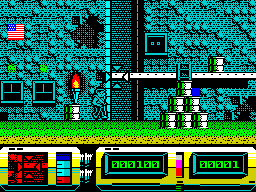 |
Among endless point-and-shoot games this one occupies a special place. Here you have to cover the protagonist, who does the job, while the enemies try to kill him. Great concept, though the gameplay is quite repetitive. |
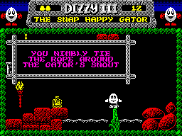 |
The Dizzy games can be called "the ultimate Spectrum adventures". While they are very simple as games (find something, bring it somewhere, apply), the diverse and colorful worlds of Dizzy spawned numerous remakes, conversions and inspired games, such as Spud’s Quest. I mostly like Dizzy III to Dizzy VI, but some modern DizzyAGE games are also very good. I prefer somewhat more "mystic" Spectrum graphics to more cartoonish Amiga artwork. Generally, Dizzy games great as exploration adventures: the biggest fun to me is to discover game world, to gradually open it screen by screen. |
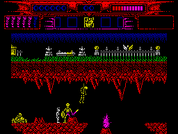 |
Myth: History in the Making (1989) Probably, exploration action games is my most favorite genre. Exploring the worlds is always fun, especially if the worlds are diverse, beautifully drawn and not too puzzling (so there is no need to spend hours in labyrinthine buildings or dungeons). Myth is the ultimate Spectrum exploration action game — beautiful, colorful, challenging, and diverse. The blocky Spectrum graphics adds some mystic flavor, missing in the Amiga version. |
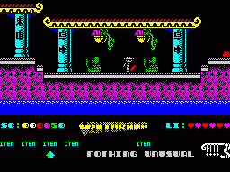 |
Venturama is rarely mentioned among top Spectrum games, and indeed, its simple levels and unresponsive control scheme is hard to praise. However, the whole "exploration adventure" environment is brilliant, so I can overlook its drawbacks and concentrate on world exploration. |
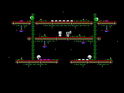 |
Probably, this is the first complete multicolor game for ZX Spectrum, based on the Nirvana engine. This very fact should already secure a firm place for Alter Ego 2 in Spectrum history, but the game itself is brilliant, too. It can be described as an innovative arcade puzzle. Highly recommended. |
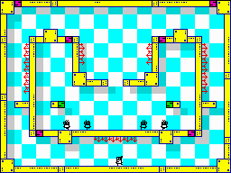 |
Gravibots is another arcade puzzle by Denis Grachev, the author of Alter Ego 2. Being a rather simple game, Gravibots looks perfectly playable in 2020. Give it a try. |